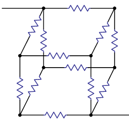

Table of Contents
Quantum programming sucks. It's low-level, bug-ridden, and maddening to have to think in qubits, which is essentially machine code in braket notation. Finding better ways to talk to quantum computers is a nice research problem because
- it's way easier than actually building the dang thing;
- very few people are thinking about this;
- it will probably make all of our lives more pleasant;
- in the best case, it could actually be useful!
That's my general motivation for working on this. Today, I want to tell you about a possible solution, but less from a practical software standpoint and more from the formal standpoint of logic and algebra. Here's a very minimal outline:
- we talk about some dualities in math and logic;
- we revisit these in the context of circuits;
- we arrive at a new way of looking at quantum computing.
This is work in progress, and that your feedback will help me make even better! So please pepper me with questions, comments, and suggestions for improvement.
1 Math and logic
1.1 Logic 101
Classical (propositional) logic is all about how to break logical statements down into their components. We represent propositions as variables like \(p, q, r, \ldots\), and join them together with connectives like \(\texttt{AND}\) (\(\wedge\)), \(\texttt{OR}\) (\(\vee\)), \(\texttt{XOR}\) (\(\oplus\)), \(\texttt{NOT}\) (\(\neg\)) and \(\texttt{IMPLIES}\) (\(\to\)): \[ p \wedge q, \quad q \to r, \quad r \vee q, \quad \neg p. \] The set of formulas created from a set of propositional variables \(\mathbb{P}\) by connectives is denoted \(\mathbb{F}_{\mathcal{P}}\), or simply \(\mathcal{F}\). There are two ways to check if a logical formula is correct. The first is to use syntax, which usually means a proof system. These take many forms, but Gentzen's "natural deduction", which has introduction and elimination rules for connectives, are probably the easiest to use. For instance, for \(\to\) these are the (perhaps) familiar rules of modus ponens and condtional proof: \[ \frac{\Gamma \vdash A, \, A \to B}{\Gamma \vdash B} \,\,(\to\! \text{E}), \quad \frac{\Gamma \vdash [A]_a, \cdots, B}{\Gamma \vdash A \to B} \,\,(\to\! \text{I}: a), \] where \(\cdots\) means that we deduce \(B\) conditional on assuming \(A\) at line \(a\). Also \(\Gamma\) is a set of formulas, \(A, B \in \mathcal{F}\) and \(\vdash\) is the syntactic turnstile. A theorem is a formula which follows from the empty set, e.g. \(\vdash p \to p\), since starting with \(p\) we deduce \(p\).
This is a purely formal affair. The second way involves semantics, i.e. how we interpret a formula. For classical propositional logic, this means assigning truth values \(\{0, 1\} = \mathbb{Z}_2\). A valuation is just an assignment of truth values to each propositional variable, \(v \in \mathbb{Z}_2^{\mathcal{P}}\). We then figure out truth values for compound formulas by recursion, i.e. if \(\mathcal{F}\) is the set of formulas, \(v\) determines an assigment \(\phi_v \in \mathbb{Z}_2^{\mathcal{F}}\). As an example, \[ \phi_v(A \vee B) = \max\{\phi_v (A), \phi_v (B)\}, \quad \phi_v (\neg A) = 1 - \phi_v(A). \] We write \(\Gamma \vDash A\) if any time a valuation assigns \(\phi (\gamma) = 1\) to all elements of \(\gamma \in \Gamma\), it assigns \(\phi(A)=1\). The symbol \(\vDash\) is called the semantic turnstile, and a formula that is always true, for any valuation, is called valid. As an example, \(\vDash p \vee \neg p\) since one of \(p\) and \(\neg p\) is assigned \(1\).
Note that, for formulas over a finite set of propositional variables \(\mathcal{P}\), we only need to consider the \(2^{|\mathcal{P}|}\) binary assignments for those variables. Enumerating these assignments we get what is called a truth table, introduced by no less venerable a figure than Wittgenstein. The truth table has a bit more structure than meets the eye. Given a formula \(A\), we can restrict to the subset of the truth table that makes it true, so \[ \phi(A) = 1, \] which we usually just write as \(A \in \phi\). For instance, restricting to the entries for which \(p\) is true cuts the table in half, or filters it. (This is a technical term we won't dwell on.) There is a lovely structural correspondence between filters and logic, but to see it, we'll need to introduce some algebra and topology!
1.2 Boolean algebra
First, we'll need to translate this classical logical jazz into the language of algebra. The basic idea is to view propositional variables \(\mathcal{P}\) as unknowns, and do high-school algebra with them, adding and multiplying according to the usual rules, e.g. \[ p(q + r) = pq + pr. \] We can then define logical connectives using algebra: \[ p \wedge q = pq, \quad \neg r = I - r, \quad p \oplus q = p + q. \] Here, \(I\) is a special identity variable satisfying \(I\cdot \phi= \phi\), and we can scalar multiply by elements of \(\mathbb{Z}_2 = \mathbb{F}_2\), where we now view this as the field of \(2\) elements. Thus, our algebra \(\mathcal{B}\) is not merely a vector space over \(\mathbb{F}_2\) but a commutative ring (associative, distributive, commutative product, etc). We need one more thing to make it Boolean, however, namely the property of idempotence: \[ p^2 = p. \] Logically, this makes sense because \((p \wedge p) \leftrightarrow p\); arithmetically, it makes sense because variables takes values in \(\mathbb{F}_2\).
This formulation gives us access to the tools and concepts of algebra, and with a more effort, topology. First, note that the field \(\mathbb{F}_2\) itself forms a Boolean algebra with no variables, \(\mathcal{B}_{\varnothing}\). The valutions \(\phi\) on formulas that we were talking about before are not just any old function; the recursion rules ensure it is a structure-preserving map, or homomorphism from the Boolean algebra \(\mathcal{B}\) to the trivial algebra \(\mathbb{F}_2\): \[ \phi(A + B) = \phi(A) + \phi(B), \quad \phi(A)\phi(B) = \phi(A)\phi(B). \] We'll call this set of maps \[ S(\mathcal{B}) = \text{Hom}(\mathcal{B}, \mathbb{F}_2). \] In logical terms, \(S(\mathcal{B})\) is just the set of entries in the truth table! The filters we talked about before are sets \[ \mathcal{O}_A = \{\phi \in S(\mathcal{B}) : A \in \phi\}. \] We will take these as the basis of a topology, i.e. they generate the collection open sets by union. With the resulting topology, \(S(\mathcal{B})\) is called a Stone space after Marshall Stone. It has the following defining properties (proof omitted!):
- Hausdorff (any two points have disjoint neighbourhoods);
- totally disconnected (only singletons are connected); and
- compact (any cover has a finite subcover).
Because \(A \notin \phi\) just in case \(\neg\phi \in \phi\), we have \[ \mathcal{O}_{\neg A} = \overline{\mathcal{O}_A}, \] where \(\overline{U}\) is the complement. Hence, our basic filters \(\mathcal{O}_\phi\) are not only open, but closed, so clopen. Stone proved these are the only clopen sets, which shows that the clopen sets of the Stone space \(S(\mathcal{B})\) are in one-to-one correspondence with the Boolean algebra \(\mathcal{B}\). In fact, these clopen sets form a Boolean algebra with e.g. \[ U \vee V = U \cup V, \quad \neg U = \overline{U}. \] This algebra is isomorphic! This result is called the Stone representation theorem, because it tells us that we can faithfully represent an abstract Boolean algebra with a concrete filter structure on the truth table.
1.3 Gelfand duality
How far can we push this? There is a nice reformulation of the clopen sets that paves the way for a more general result. The set \[ \mathcal{O}_A = \{\phi \in S(\mathcal{B}) : \phi(A) = 1\} \] can be identified with a binary function \(\hat{A}\) on \(S(\mathcal{B})\), simply by setting \[ \hat{A}(\phi) = \phi(A). \] We just swapped things around! It's a dumb trick, but turns out to be incredibly useful. In functional analysis, it is called the Gelfand representation, and gives rise to the Fourier transform, Mellin transform, and other such deep things. Moreover, this isn't just any binary function; since \(\hat{A}^{-1}(1) = \mathcal{O}_A\) and \(\hat{A}^{-1}(0) = \mathcal{O}_{\neg A}\), the inverse image of open sets is open and the map is continuous. Since all homomorphisms are of this form, we have \[ \mathcal{B} \cong C_0[S(\mathcal{B})], \] where \(C_0\) is the set of continuous binary functions, and \(\cong\) is an isomorphism of algebras given by the Gelfand representation. (Incidentally, I've never seen this stated anywhere!)
We've been working over the field \(\mathbb{F}_2\), which makes sense for Boolean logic. The next simplest field is \(\mathbb{C}\) (the real numbers are trickier because they have algebraic "holes"). Consider a commutative algebra \(\mathcal{A}\) over \(\mathbb{C}\), so as before, it's a vector space with scalar multiplication over \(\mathbb{C}\) and forms a commutative ring. Homomorphisms \(\phi: \mathcal{A} \to \mathbb{C}\) are linear and multiplicative, just like valuations: \[ \phi(AB) = \phi(A)\phi(B), \quad \phi(\alpha A + \beta B) = \alpha\phi(A) + \beta \phi(B). \] These homomorphisms are called characters rather than valuations, and together, they form what is called the spectrum of the algebra, which we write \(\text{Spec}(\mathcal{A}) = \text{Hom}(\mathcal{A},\mathbb{C})\). Different field, different names, but the structure is very similiar! The Gelfand representation associates to an element \(A \in \mathcal{A}\) a function \(\hat{A}: \text{Spec}(\mathcal{A}) \to \mathbb{C}\) defined by swapping, \[ \hat{A}(\phi) = \phi(A), \] just like we did above. Following the analogy, the spectrum \(\text{Spec}(\mathcal{A})\) is the "truth table" for the commutative algebra \(\mathcal{A}\), and the functions \(\hat{A}\) are continuous functions on the truth table.
For Boolean algebras, the Gelfand map is an isomorphism. For a general commutative algebra, this isn't necessarily the case; to make it true, we need some condition analogous to idempotence. The necessary condition is a bit more involved, and we need to add a new operation \(\ast:\mathcal{A}\to\mathcal{A}\), an involutive automorphism which generalizes complex conjugation: \[ A^{**} = A, \quad (AB)^* = B^*A^*, \quad (\alpha A + \beta B)^* = \alpha^* A^* + \beta^* B^*. \] We also need to measure the size of elements use the operator norm, i.e. the maximum absolute eigenvalue: \[ \Vert A \Vert = \sup \{|\lambda| : \lambda \in \mathbb{C}, \, A - \lambda I \text{ is not invertible}\} = \sup\{|\lambda| : \lambda \in \text{spec}(A)\}. \] (We use lower case "spec" for the spectrum of an operator.) The \(\ast\) operation must be norm-preserving, \(\Vert A^* \Vert = \Vert A \Vert\), but the special condition equivalent to idempotence is something called the C* identity: \[ \Vert A A^*\Vert = \Vert A \Vert^2. \] Equipped with such a \(\ast\) operation, \(\mathcal{A}\) becomes a commutative C* algebra. The Gelfand representation, like the Stone representation, is an isomorphism, with \[ \mathcal{A} \cong C_0[\text{Spec}(\mathcal{A})] \] where \(\cong\) indicates not only that they are isomorphic as algebras (homomorphisms each way), but the norm is the same. Often, this is written \[ \mathcal{A} \cong C_0[\Phi] \] where \(\Phi\) is the spectrum, which viewed as a topological space is locally compact and Hausdorff (a bit like the Stone space). If the analogue of the set of switches \(\mathcal{P}\) is finite, then the spectrum is a vector space \(\mathbb{C}^{|\mathcal{P}|}\) on which the algebra acts diagonally. The moral of the story: in the same way an abstract Boolean algebra can be realized concretely using continuous functions on the truth table, a commutative C* algebra can be realized using continuous functions on the spectrum, which in simple cases takes the form of a finite-dimensional vector space.
1.4 Noncommutative algebras
At this point, it hopefully feels natural to ask what happens when the product is noncommutative, so that \[ A \cdot B \neq B \cdot A \] in general. If the C* condition and all the other axioms still hold, this will form a noncommutative C* algebra. It can no longer be the case that such an algebra, say \(\mathcal{A}\), is isomorphic to continuous complex-valued functions on a space \(\Phi\), since these functions necessarily commute: \[ (A\cdot B)(\phi) = A(\phi) B(\phi) = B(\phi) A(\phi) \] for \(\phi \in \Phi\). We observed before that, in the commutative case, the algebra for a finite-dimensional spectrum can be represented by diagonal linear operators. Here, we simply replace diagonal operators by bounded ones! In other words, we expect the spectrum to be a vector space on which the algebra \(\mathcal{A}\) acts like matrices.
This intuition is right, but the details are a little more complicated. Before, we defined the spectrum as the set of characters, essentially the one-dimensional representations of \(\mathcal{A}\), i.e. on \(\mathbb{C}\). Similarly, we now try to construct the spectrum as the set of representations of \(\mathcal{A}\) acting on some Hilbert space. It turns out that these can built from objects called states \(\phi \in \Phi_{\mathcal{A}}\), defined as unital linear functionals: \[ \phi(\alpha A + \beta B) = \alpha \phi(A) + \beta \phi(B), \quad \phi(I) = 1. \] There is a lovely construction due to Gelfand-Naimark-Segal (GNS) showing how to explicitly build, for each state \(\phi\):
- a Hilbert space \(\mathcal{H}_\phi\);
- a ring homomorphism \(\mathcal{\pi}_\phi: \mathcal{A} \to \mathcal{B}(\mathcal{H}_\phi)\) from \(\mathcal{A}\) to bounded operators on \(\mathcal{H}_\phi\);
- and finally, a vector \(\xi_\phi \in \mathcal{H}_\phi\) which reproduces the linear functional \(\phi\) from expectations: \[ \phi(A) = \langle \pi_\phi(A) \xi_\phi, \xi_\phi\rangle. \]
At this point, we have a disorganized collection of representations. It turns out that states form a convex set (by the Banach–Alaoglu theorem), and the extreme points of this set \(\partial\Phi_{\mathcal{A}}\) correspond to irreducible representations (irreps), which cannot be broken down into direct sums of others. The direct sum of representations \[ \mathcal{H}_{\mathcal{A}} = \bigoplus_{\phi \in \partial\Phi_{\mathcal{A}}} \mathcal{H}_{\phi}, \quad \pi_{\mathcal{A}} = \bigoplus_{\phi \in \partial\Phi_{\mathcal{A}}} \pi_\phi \] is faithful, with \(\mathcal{A}\) is isometrically isomorphic to the bounded operators acting on \(\mathcal{H}_{\mathcal{A}}\), \[ \mathcal{A} \cong \mathcal{B}(\mathcal{H}_{\mathcal{A}}), \] with a map given by \(\pi_{\mathcal{A}}\). This is a bit harder to grok than the earlier examples, but secretly, it's pretty similar. Earlier, we built a space from characters, irreducible representations that happened to be one-dimensional, and this time we built it from irreducible representations that "blew up" into Hilbert spaces of potentially many dimensions. The states turns out to be the key tool; they are the analogue of the truth table.
2 Physics and computation
So far, all of this has been math. The point was to lay out a nice set of analogies taking us from Boolean algebra to noncommutative C* algebras. Now, however, we want to switch gears and think about the physics of these different setups; the punchline will be a different way of doing quantum computing.
2.1 Boolean circuits
Let's return to Boolean algebras. In the 30s, various people, most prominently Claude Elwood Shannon, realized you could implement logic on a circuit. His idea was to replace propositional variables \(\mathcal{P}\) by switches that could be turned on or off. Connecting switches in series corresponds to \(\texttt{AND}\), or the product in the Boolean algebra:

Similarly, connecting them in series corresponds to \(\texttt{OR}\), which (as Shannon points out) can be interpreted as \(+\). Shannon was interested in using Boolean algebra to simplify the design of switching circuits. As a very simple example, we can take this complicated beast

and reduce it to this:

(Note that \('\) indicates \(\texttt{NOT}\).) He does many other things besides, but this is a key insight: by translating the physical structure of the circuit into algebra, we can use math to optimize the design. In fact, we can map proof systems like the natural deduction rules I mentioned above to optimization routines. This is a primitive instance of the Curry-Howard isomorphism, which tells us that proofs are programs.
This is the syntactic side of things; in the images above, switches are "unknowns", just like high school algebra, and we reason symbolically. But what about semantics? Entries in the truth table are just definite states of the switches. A switch is "on" (nonzero conductance) iff the corresponding variable is assigned \(1\) and "off" (zero conductance) iff the variable is assigned \(0\). The conductance of the component switches determine the overall conductance of the circuit. This is all kind of obvious, but what's cool is that here is where physics, and specifically compositional measurement, makes its appearance.
2.2 Equivalent resistance
Shannon used this binary measurement of "hindrance" (conductance), but we can imagine replacing switches wih variable resistors \(\mathcal{P}\), connecting them in series and parallel as before, and making exact conductance measurements. The rules for conductance \(G\) follow from the rules for resistance: \[ G_\text{parallel}(p, q) = G(p)+G(q), \quad G_\text{series}(p, q) = \frac{G(p)G(q)}{G(p)+G(q)} = G_\text{series}(q, p), \] where we are using the fact that \(G(p), G(q) \in \mathbb{R}\) to swap the order. We need to ban short circuits to make sure the conductance doesn't blow up (having positive conductance is enough), but with that proviso, we can embed our circuits in a commutative C* algebra.
In the first course on circuits, we spend a lot of time finding "equivalent resistance"; under the hood, we are implementing some version of the Curry-Howard isomorphism over a commutative C* algebra. This is the amusingly Bourbaki way of viewing high school circuits!

But the serious point is that there is a precise analogy to what Shannon was doing. If high school resistor problems are the syntax, what is the semantics? Instead of assigning a truth value to each switch, we assign conductance or resistance to each variable resistor in the set \(\mathcal{P}\). The algebra acts continuously on this set by Gelfand duality. Since a symbolic expression is just a circuit, this means we continuously assign an equivalent resistance once we assign resistance to each element of \(\mathcal{P}\). Once again, it's a story of compositional observation.
We can imagine playing the same game with any set of classical observations. The set \(\mathcal{P}\) of "propositional variables" would be atomic measurements or things we directly control, like the switches and variable resistors. A circuit maps the variables \(\mathcal{P}\) into a commutative C* algebra. The elements of \(\mathcal{P}\) are essentially generators of the algebra. We can use syntactic manipulations, including laws of physics represented by an assumption set \(\Gamma\), to simplify the circuit layouts. The set \(\Gamma\) represents relations, and we write \[ \mathcal{A} = \langle \mathcal{P} | \Gamma\rangle_\text{comm} = \langle \mathcal{P} | \Gamma\cup \mathcal{P}_\text{comm}\rangle, \] for the corresponding algebra, where \(\mathcal{P}_\text{comm}\) are relations to the effect that all variables commute. On the semantic side, we have a device interface (switches, variable resistors, etc) which lets us pluck out a line of the truth table. The compositional part of the semantics is realized by Nature itself.
2.3 Noncommutative circuits
Given the leadup, you can guess what happens next: we consider noncommutative circuits. We'll have a set of noncommutative variables \(\mathcal{P}\), and a set of assumptions or relations \(\Gamma\), which together make a noncommutative C* algebra: \[ \mathcal{A} = \langle \mathcal{P} | \Gamma\rangle. \] We can draw circuits, with the simplest convention being Shannon's, i.e. variables in series denotes products and in parallel denote sums. We can also add numbers in circles to represent multiples of the identity:

We employ algebraic reasoning on the syntactic side. The semantics is a bit more interesting, though. A line in the truth table now corresponds to an irrep; irreps correspond to extreme elements of the set of states \(\Phi_{\mathcal{A}}\), also called pure states. The topology of this convex blob is hard to reason about, and Størmer found a nicer way: to each state \(\phi \in \Phi_{\mathcal{A}}\) we can associate a family of sharp or zero variance operators: \[ \mathcal{S}_\phi = \{A \in \mathcal{A}: \Delta_\rho^2 A = \rho(|A|^2)-|\rho(A)|^2 = 0\}. \] The pure states are those for which \(\mathcal{S}_\phi\) is maximal, i.e. cannot be extended. In terms of ordinary linear algebra, this is just an eigenstate. In terms of logic, this is an element of the truth table. And from the perspective of measurement, it will specify an exact observation (or observations) from which a compound measurement can be derived.
We can link back to Boolean algebra in an elegant way. Recall the spectrum of an operator: \[ \text{spec}(A) = \{\lambda \in \mathbb{C} : A - \lambda I \quad \text{not invertible}\}. \] We can determine these using the minimal polynomial. An important example is projectors, Hermitian operators satisfying \[ \Pi^2 - \Pi = \Pi(\Pi - I) = 0 \quad \Longrightarrow \quad \text{spec } \Pi = \{0, 1\}. \] These correspond to binary measurements (you're in or out of a closed subspace) but also gives the noncommutative version of the idempotence condition! Von Neumann and Birkhoff used this to develop the theory of quantum logic, by analogy with the lattice-theoretic treatment of classical logic. But this ultimately ended up as a bit of a mathematical dead-end; it seems we need the full richness of C* algebras to get something interesting, e.g. quantum computing. But that's a talk for another day!
2.4 Isbell duality*
Instead, I want to finish with a fun speculation. We can summarize the analogies so far in the form of an equation: \[ \frac{\text{syntax}}{\text{semantics}} = \frac{\text{algebra}}{\text{geometry}} = \frac{\text{programs}}{\text{measurement}}. \] The first lies in the domain of logic, the second math, and the last physics (with "computation" understood in the sense of interpretable physi). A natural question is: what is the common ratio? A wild guess is Isbell duality, encapsulated by a scary-looking commutative diagram:

In the diagram, we have a few things going on:
- \(\mathcal{A}\) is playing the role of algebra;
- \(\mathcal{V}\) the role of vector space;
- \(y\) is the Yoneda embedding and \(z\) the dual Yoneda embedding;
- \(\mathcal{O}\) the "algebra of operators" functor akin to \(C_0\) and \(\mathcal{B}\);
- \(\text{Spec}\) the "spectrum" functor as above.
The diagram just states a categorical version of the Gelfand swap: for every object \(A, B\) of \(\mathcal{A}\), \[ \text{Hom}_{[\mathcal{A},\mathcal{V}]^\text{op}}(\mathcal{O} z(A), y(B)) \cong\text{Hom}_{[\mathcal{A}^\text{op},\mathcal{V}]}(z(A), \text{Spec }y(B)), \] William Lawvere wrote that this link is "the first step toward expressing the duality between space and quantity fundamental to mathematics". These make the most sense in the context of mathematics; are probably related to Stone duality for logic; and for computation I have no idea. But the links between analogies are also interesting:

The links were historically made between dark names, but by virtue of Isbell duality also link light names. The end result is a richly suggestive web of dualities; could be a fun thing to explore further! And it never hurts to sink your foundations deeper; it tends to make the house more stable.